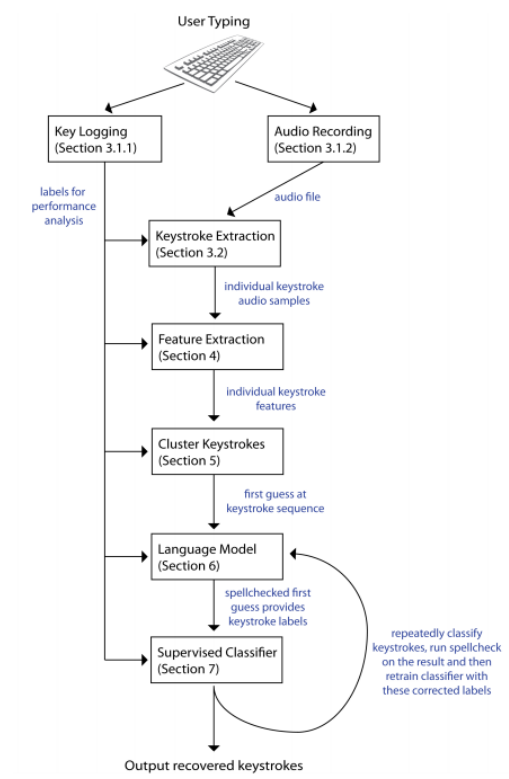

Introduction
Meetings
Previous Research
Hardware
Smartphone Technology
The Android Operating System
Keyboard Hardware
Testing conditions
Constraints
Keyboard
Smartphone
Lab conditions
Variables
Testing methodology
Initial testing plans
Testing process
Feature extraction
Features
Pre-recorded audio extraction
Live audio extraction
Isolating peaks
Feature Analysis
Simple comparison
Supervised and unsupervised learning
Development process
Development process ideology
Program functionality
Program Steps
Initial Setup
Feature Extraction
Feature Analysis
Supervised/Unsupervised Learning
Mean approximation
Kmeans clustering
Storing results
Android API
Storage facilities
GUI functionality
Results
This project was started in January of 2017 and finished in August of 2017, with the current dated version of this corpus being 21/8/2017.
The author of this corpus is Daniel Jack Andrews, if you have any queries you can contact the author at dja33@kent.ac.uk.
Nearly every user on the market owns a smartphone within the western first world. These modern day smartphones often contain technology that is more powerful and sophisticated that the rockets that delivered man to the moon.
Considering this the potential power behind the average smartphone is huge, even for the purpose of breaking security measures. Computer keyboards are not a new invention and have been rooted to the development of computers since their creation; however they are fundamentally at the hand of every and all sensitive data entry. Sensitive data could reflect bank details, passwords, personal or confidential information and more.
The dissertation that this corpus supports aims to challenge whether a modern day smartphone can acoustically eavesdrop on a keyboard through side-channels in the acoustic noise produced by pressing the keys on the board.
This corpus aims to provide and support the dissertation associated with it such that any reference of relation to the material, results or development of the dissertations logic, applicants or findings can be backed up and catalogued. This corpus will skim over certain aspects of the project, where instead these details can be found in the bulk of the dissertation. Instead this corpus aims to provide a uniformed catalogue of data used as referencing points in the dissertation thesis itself.
This project could not have been completed without the following people and groups who have provided wonderful guidance and support throughout the project.
Budi Arief - Supervisor, computer security lecturer.
Samuel Williams - PhD candidate, programming language implementation specialist.
Alice Mo - Data Mining Analyst and MSc candidate at University College London
Michael Berry - PhD, software engineer, electronics tinkerer and radio licence holder.
The Shed - Group of knowledgeable technicians with a wealth background experience in varying fields.
On several occasions I met my supervisor Budi Arief to discuss the project undertaken. These meetings were intended to provide insight into the current status of the project while assisting in any issues and providing other forms of support to the project.
Unfortunately I have only three audio recorded sessions as my audio recording equipment failed on two occasions. Below are the three recorded meetings I do have access to. For all other meetings I took detailed notes on our discussions.
In-between June and August I lost two of my recordings.
Discussed hardware capabilities, such as whether the phone being used has multiple microphones, where they are and what sort of sensors to utilise.
Discussed controlled environment settings:
Other items to note:
Produced a small demo Application for Android that will report sensory data from the phone, discussed which keys to focus on and just recording the values for the time being before trying to identify any particular pattern.
Use keys that are of varying sizes and distances away from one another to help for identification, keys mention included:
Investigate potentially new technologies
Research into feature extraction to further develop an understanding of the topic material
For sound:
For accelerometer:
Alternatively, potential for Gyroscopic sensor too.
Initially this was a demoralising iteration, I found that the accelerometer was slow within the Android SDK and that I would not reliable be able to identify or determine key presses given such little ranging values over a sample, such that I decided for the time being to focus solely on acoustic keylogging rather other features.
Decided to go back to the 'drawing' board and look at research more thoroughly, other assessments had gotten in my way and little work had been made through this iteration.
Had difficulties isolating the memory storage on the Smartphone as it appeared under a 'virtual' filesystem such that I couldn't accurately locate the file that I was saving all my samples and readings to.
Found that amplitude wasn't a good measurement for feature extraction alone and that frequency would be an absolute requirement.
Had laser cut a frame however to hold the phone and keyboard in place.
A lot of this time was spent working on assessments, exams and job interviews. Evaluation of research was the focus in this period while the development occurred post June. As such I shall present the researched papers and a link to my evaluations of those. These papers provided the foundation of the majority of my work, with research from Andrew Kelly featuring prominently.
We discussed what had been completed so far for the project, I had scrapped my previous codebase as I wasn't happy with the quality of it. As such the focus at this part was that the research had been fully conducted in the project.
We focused on three main elements of the project after research:
Experimentation and methodology
Implementing a proof of concept
Other ideas for later use
Unfortunately I lost the recording for this meeting but I did however make some notes on the topics mentioned. The focus of the meeting was applying a Fourier transform across a discrete dataset of values for analysis in the frequency domain. Such that we could later pass this into a feature extraction function that would return us distinct features of keystrokes.
Another lost audio recording for this meeting.
I had successfully written a feature extraction algorithm that was able to identify distinct differences in frequency and magnitude between two key presses, albeit there were complications with live audio recording as to be expected.
The next focus on was on refining this feature extraction if possible and looking into a primitive machine learning algorithm to help classify and train the keys being pressed. In this case the focus being on a supervised algorithm.
A setback occurred where my AudioRecord API ceased to operate and instead started spurring errors, after fixing these owing to updated Android API permission system the project was back on track.
Discussed the possibility of focussing on multiple keyboards but for the time being decided to look at just one keyboard until later period. Talked about storing the data and dealing with Androids file system in a manner that can be adjusted accordingly if need be. Java offers serialisation, a useful mechanism of preserving the data encapsulated within an object at runtime; potential for this tool to be used. Preserving data comes in the form of being able to then use this as a measurement of comparison for later, i.e I'm able to identify the key C because I have told my program from training that key C sounds like this.
Decided that the phone should handle everything, previously there was a thought of potentially having a machine elsewhere decode the live audio into information but instead the confirmation of the phone being the sole processing machine was decided. Rationality for this was user ability, if anyone owns a phone then they also can do what this project aims for.
Discussed potentially having a visual display of characters being decoded as an end goal, however for this to be effective it would require that the device was able to quickly identify as many keys as possible as well as having a high degree of accuracy in doing so.
Talked briefly about Mel-cepstrum Frequency Analysis, a technique often used in voice recognition systems although this methodology was too foreign to be adopted.
Finished up with discussing the corpus and dissertation display and layout, decided to use markdown and provide the corpus in a HTML relative structure.
Audio - Provided on YouTube, otherwise it's 1.4GB.
Note - The previous 3 weeks consisted of back and forth between me and Budi, trying to arrange a meeting as both of us were unavailable at several periods.
This meeting was a final conclusive meeting of the project coming to an end. I spent time explaining the working system for the keylogger as well as providing details on several anecdotes regarding the system. Details included:
The he results of kmeans clustering were more accurate than mean average, kmeans scored around ~60% while mean average scored around ~52%. At this point the focus was on writing the corpus and working towards the dissertation.
Note - A final meeting is planned for the 29/8/2017 but since the Corpus will have been submitted it will not be documented, this meeting aims to provide details and feedback on the state of the dissertation.
Using the accelerometer on Android based smartphones to determine a users phone pin/pattern unlocking code. Research in this field shows that success rates in controlled environments are high (such as the user sitting down being motionless) whereas in uncontrolled environments rates dropped but still maintained a concerning high level of accuracy.
They provided relevant research from others in the field in similar veins of collecting data, previous papers referenced in this include:
The paper makes reference to different MAXIMUM sample rates of certain phones and through my own research I've found a piece of software capable of measuring the speed of a phones accelerometer which will be useful later in my own research.
They used multiple phones to correlate their findings with varying refresh rates. Collected 5 samples of each pin/pattern entry but before this had each tester enter 50 random pins/patterns with their dominant hand then following this doing the same but walking around.
The controlled data (Sitting) was used for training.
The variable data (Walking) was used for testing.
Utilising multiple mathematical formula to try to classify the data in a meaningful manner.
Utilising these formula they found a large variance between values, even when entering the same pin and such that they needed to normalise the raw signal. They used a 1-dimensional Discrete Fourier Transform with a resolution of 35 samples and found that the larger sample set would add to much variance while a smaller sample set would not preserve enough information.
The paper talks in detail about using Hidden Markov Models to predict unknown pins due to the limitations of having a classifier that only knows the patterns given by users.
They then suggest potential solutions to the problem presented:
Their suggested solution is:
Conclusion
Conclusively the paper ends by explaining that a side-channel attack is possible and potentially dangerous even with noise introduced, drawing parallels between itself and other papers in the field it makes use to explain how one could expand upon the research.
However this research focuses on inferring data from then touchscreen and does not guarantee that the same can be used for keystrokes on a physical keyboard. (As it later turns out, this is the true that Android is too limited to be able to deduce another features alone from vibrations for keystroke analysis)
Written in 2004 the original paper addresses the ability to identify with a high degree of accuracy keystrokes from emanations created from sound via side-channel attacks. Asonov and Agrawal provide a detailed understanding of the attack, how it works, why it works and methods to potentially disable or weaken the attack.
The paper expands by explaining that they recorded 2-3ms worth of the ’touch-peak’ in which they are able to extract reliable features from the sample given. That initially they tested keys ’l’ and ’k’ individually 100 times and then fed the results as a key-value pair into an neural network. The neural network was then able to identify each key press of ’l’ and ’k’ with a given 100% accuracy, however this initial experiment was at a performance of 1 metre with a microphone that may potentially exceed the capabilities of the Samsung S4s microphone. Later they experimented with variable distances and background noise with just keys ’l’ and ’k’ to challenge the accuracy of the neural network; with a distance of up to 15 metres. They reported no changes in their results given this knowledge.
Later they extended their keyset to 30 keys and noted the accuracy of given keys to the network, even expanding into the realm of utilising a separate keyboard. They found a given accuracy of 79% out of 300 ’test’ clicks.
They acknowledge that in the tests provided so far, the same user provided input onto the keys, such that they had trained a network in the users biometric attitude towards the keyboard. They found that given a change in person and approach to impact pressure applied to each key that their neural network resulted in poor behaviour.
Their work expands into other touch-based input systems such as telephones, ATMs and more - however this escapes beyond the realm of our research. Finally they suggest a mechanism to counter this attack vector, using silent keyboards such as non-mechanical however they note the price and lack of comfort these provide to users.
Conclusion
The most detailed aspect of this research is the 'touch-peak' of 2-3ms and training data, they utilise important methods that can be followed up on for my work. I plan to follow a similar pattern of testing two individual keys, then 5, then a range of keys.
In 2009 Zhang, Feng and Tygar of the University of California produced a paper that expanded upon Asonov and Agrawals in the hope to address the inefficiency of their neural network. In their paper they report a success of identifying up to 96% accuracy when disregarding a new for training label data within a 10 minute period of sound recording. They announce the success of a 90% accuracy within 5 character random password identification with only the use of letters in fewer than 20 attempts by the adversary, leading to %80 accuracy within 75 attempts at 10 character random passwords.
They incorporate the use of the constraints applied by the English language and as such utilise a dictionary to help identify potentially invalid words and replace them with the most likely correct alternative.
They quickly address the previous flaws laid out by Asonov and Agrawals paper in which labelled training data is required for learning and given the same environmental variables are in play, variables in key impact pressure lead to a severe failure within the previous paper.
The paper regards a superior technique over FFT for feature extraction and training of the neural network by utilising cepstrum features which details higher than FFT. Interestingly they admit that they are not aware whether the victim may be writing in English but instead address this by saying that given the accuracy of their results it would become apparent whether the user was writing in English or not given a few attacks.
They use clustering to help apply a class to each keystroke to a key but admit that it is potentially unreliable and as such much seed it randomly to avoid obvious overlap. A HMM (Hidden Markov Model) is used to correctly identify typical positioning of characters and likelihood of positioning given the English language, an example being ’h’ coming after ’t’ to form ’th’. Afterwards utilising a speller and grammar checking system to fill in any potentially unknown variables within words. Finally they apply this to a feedback trainer which helps the classifier to identify potential random text at a later for password recognition. They only utilise words that had less than 1/4 of their components correct to help train the classifier and with this are able to identify the quality of the classifier; more feedback equals better quality as less mistakes have been made in the classification program.
Conclusion
The big push in this research is the use of Mel-cepstrum over FFT, although this technique is superior at analysis it is far more complex and could potentially be beyond my capabilities but is worth noting in detail. FFT is an easy technique to implement while Mel-cepstrum has been notably used in voice recognition software. They utilise clustering (see later on kmeans clustering) to classify keystrokes but describe this technique as 'standard clustering methods' (later research explains more detail kmeans clustering).
One very substantial prior research piece is that of Andrew Kellys similar exploration into acoustic keylogging by building of the previous research of Asonov and Agrawal in 2004. The piece written in 2010 demonstrates extensive understanding of techniques provided by Asonov and Agrawal while expanding upon them to deliver a clear depth of expansive knowledge. Kelly provides an overview of different stages utilised in the project with each stage isolating requirements for the project as a hole. Kelly explains the use of a ’press-peak’ for analysing the acoustic features from a keystroke which is compromised of two separate components a touch-peak and hit-peak; the touch-peak providing a further detailed analysis for digital sound signalling.

Kelly explains the use of Asonovs and Agrawals neural networks for classifying keystrokes which resulted in a 79% success rate, this attack vector required labelled training data and suffered from variations in accuracy with the pressure applied to each keystroke. Later Kelly mentions the expansion of this attack vector provided by Zhang, Zhou and Tygar in 2009, in which they utilised an unsupervised clusters of keystrokes - feeding these into unigram and bigram statistics to map clusters to the correct keys and later applying a language model and dictionary for spell checking to then feed into a supervised classifier with the correct text. Kelly notes that Zhang, Zhou and Tygar found that utilising cepstrum feature extraction over FFT (Fast Fourier Transform) yielded a much higher accuracy. By using a spell checker with a dictionary they were able to train their classifier and provide more accurate results when analysing keystrokes.
The paper explains that keystrokes often fall within the frequency range of 400-12000Hz, although Kelly does not explain whether the keyboards used are membrame or mechanical, in the case of our project - it’s a mechanical keyboard.
Conclusion
Overall I have provided a small subset of Kellys early analysis in his paper but the important details like in his use of feature extraction via FFT and Mel-cepstrum frequency analysis. The use of kmeans clustering over supervised learning is an interesting concept but I hope to implement both to verify these findings myself as machine learning is not a concept I am personally too familiar with.
...